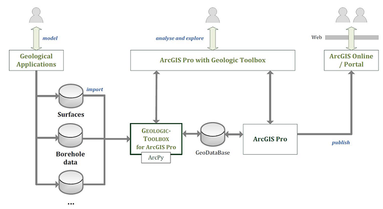

The objective of the Geologic Toolbox project is to provide software tools which bring geologic data into the GIS world and to allow geoscientists the combined use of GIS data (such as traditional base layers, map services, etc.) and representations of geologic 3-d models.
As a first step, a collection of functions to import geologic layer models and borehole information into ESRI's ArcGIS Pro environment is provided. Basically, the GeologicToolbox comprises of ArcPy scripts that can be executed from ArcGIS Pro's user interface.
Furthermore, additional Java implementations which run independently from ArcGIS Pro can be used. The Java code inside the GeologicToolbox repository mainly addresses Java programmers (although everyone should be able to run them). To execute these helpers a suitable Java Runtime Environment and the current Java-code from the 52n Triturus project is needed.
We expect that the offered toolbox functionality will grow soon in the near future. You are welcome to participate!